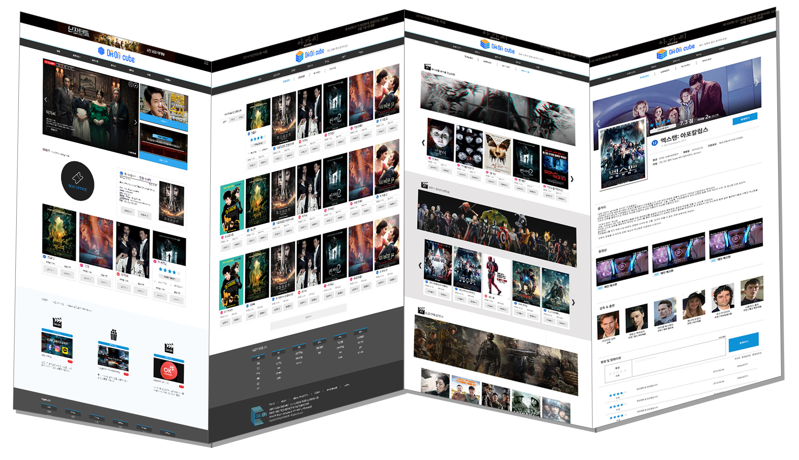
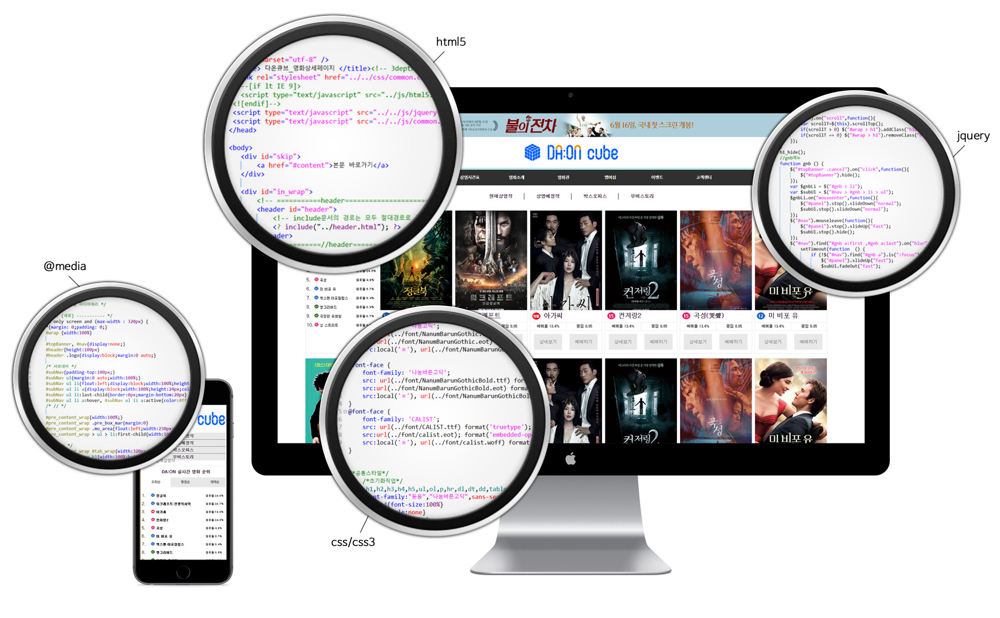
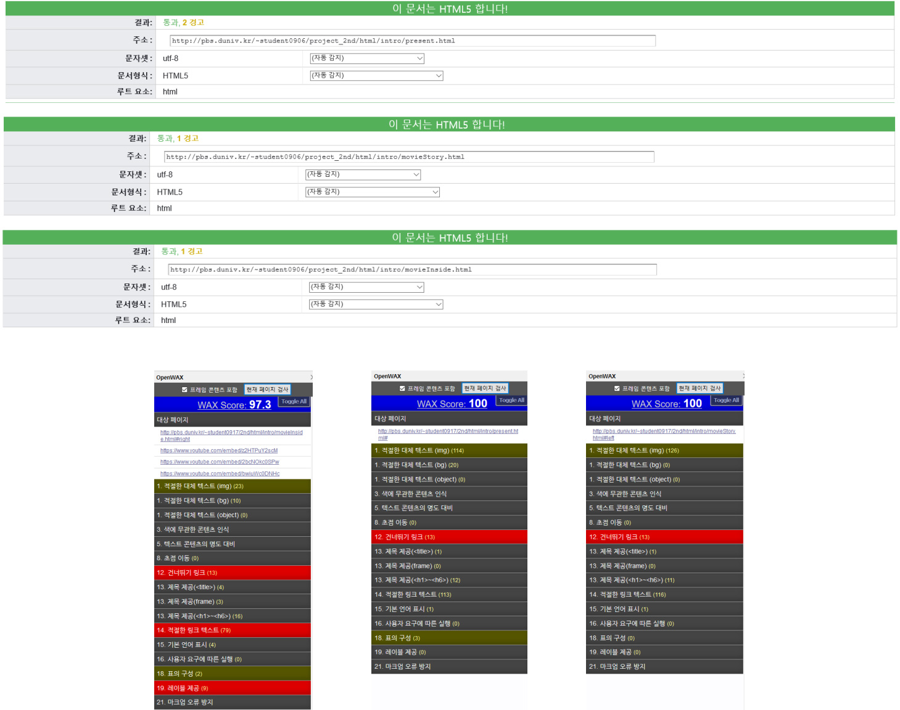

Website Launching
'DA:ON Cube'
효과적인 서비스를 효율적으로 전달하는 영화관 사이트 론칭
스크립트능력을 최대한 활용하여 예매 서비스구축 및 반응형 웹 제작을 목표로 하였습니다. 다 온 : '좋은 모든 일들이 다 오는'의 준말
Main Color 1
#0d92d7
Main Color 2
#ffffff
Sub Color
#333333
론칭 시기인 여름에 맞추어'시원함', '젊음', '친근함'을 컨셉으로 색을 정하였습니다.
html5, css/css3, jquery를 직접 코딩하여 제작하였습니다.
접근성을 최대한 살리려 팝업창을 사용하지 않고 상단 배너를 활용하였습니다.
왼쪽 상단에 있는 닫기 버튼을 클릭시 배너가 사라지며
주메뉴가 맨위로 올라가게끔 코딩하였습니다.
미디어 쿼리를 사용하여 윈도우 창에 모바일 크기를 가질시
레이아웃이 보기 쉽게 정리되도록 코딩하였습니다.
제이쿼리를 사용하여 별점 입력 및 댓글 입력 후
등록하기 버튼을 누르면 데이터가 저장되어 댓글을 입력 할 수 있습니다.
W3C의 validator와 FireFox의 OpenWAX를 사용하여 검사하였습니다.
